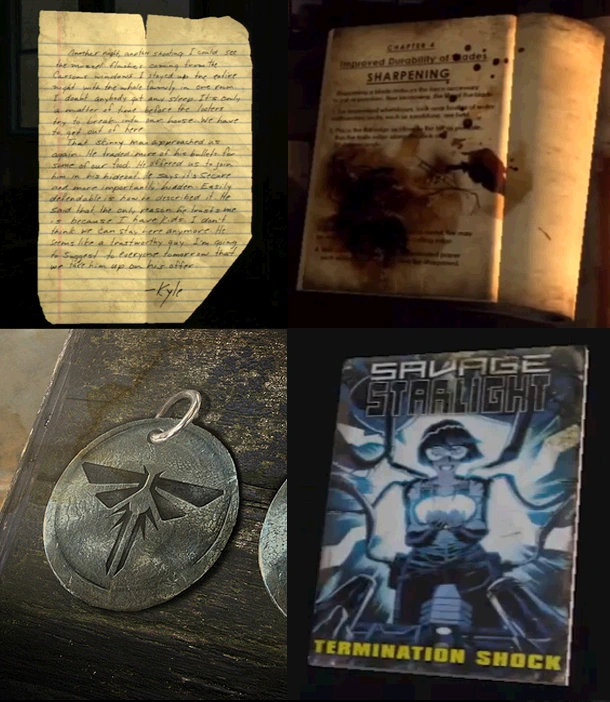

содержание
Коллекционный материал
Коллекционный материал

Коллекционный материал - предметы, разбросанные по локациям одиночной кампании в
«Одни из нас», доступные для собирательства. В данную группу входят четыре вида предметов:
артефакты, справочники, медальоны «Цикад», и комиксы.
Артефакты
-
В данный вид коллекционного материала, в основном, входят различные типы
предметов, хотя в большинстве случаев, это записки или листки бумаг.
Артефакты помогают лучше изучить вселенную игры в период пост-апокалипсиса и взглянуть на события под разным углом от лица разных персонажей.
Медальоны Цикад
-
Круглые металлические значки, с эмблемой Цикад на одной стороне, именем и
сервисным номером на другой.
Справочники
-
Выглядят как заношенные, местами даже обожженные или изорванные, учебные
пособия, которые содержат информацию по улучшению оружия и инструментов, которыми владеет, и
которые может собирать Джоэл.
Комиксы
-
Это выпуски серии Дикие Звезды, популярные во вселенной игры, где центром сюжета
является ученая Даниэла и ее приключения в космосе.